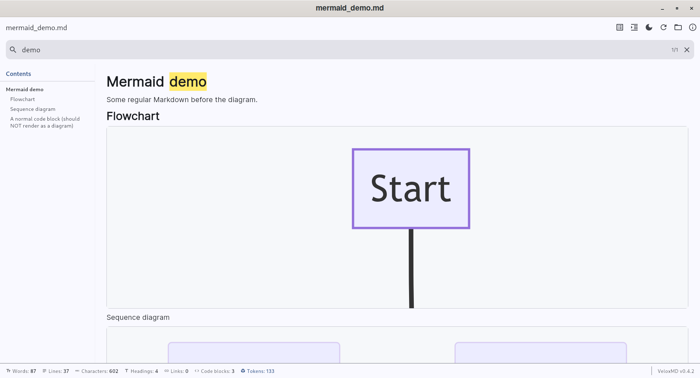

Instant & Lightweight
Opens .md, .markdown, .mdc,
and .txt files right away with automatic live reload
when files change on disk.
A fast, clean, offline desktop Markdown viewer for Windows and Linux — with live reload, Mermaid diagrams, light/dark themes, and PDF export.
Opens .md, .markdown, .mdc,
and .txt files right away with automatic live reload
when files change on disk.
Renders flowcharts and sequence diagrams directly inside your documents with full-screen zoom and pan inspection.
Automatic table of contents, in-document search, link history navigation, and customizable keyboard shortcuts.
Switch between light and dark themes, adjust font scaling, or enable the bundled OpenDyslexic font in one click.
Everything runs locally on your computer. No accounts, no tracking, and no telemetry.
Built with Flutter and released under the permissive MIT License. Contributions and issues are welcome on GitHub.



Prebuilt installers and packages for Windows (.exe)
and Linux (.deb and AppImage)
are published on
GitHub Releases.